Um projeto interdisciplinar de História unindo patrimônio histórico, sustentabilidade, tecnologia e inovação através de uma Mini Estação Meteorológica.
Explorar ProjetoEste projeto foi desenvolvido para compreender como a qualidade do ar influencia diretamente a preservação do patrimônio histórico e a vida da população no Centro Histórico de Santana de Parnaíba.
A proposta foi idealizada pelo Professor Maicon como parte de um projeto interdisciplinar de História, incentivando os estudantes a relacionarem meio ambiente, urbanização, patrimônio cultural e tecnologia.
A parte tecnológica foi fortalecida com a construção de uma Mini Estação Meteorológica utilizando Arduino, com orientação do Professor Rafael, responsável pelo suporte técnico e experimental.
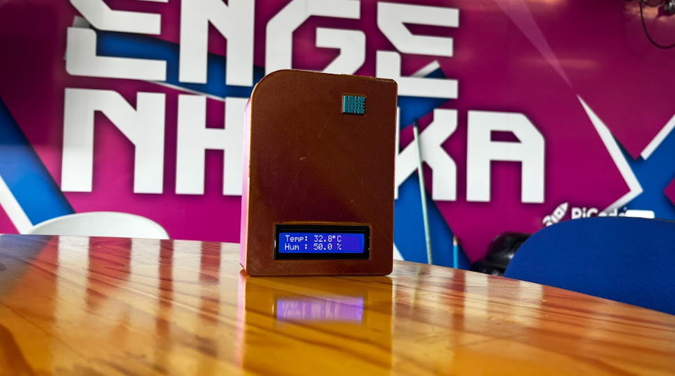
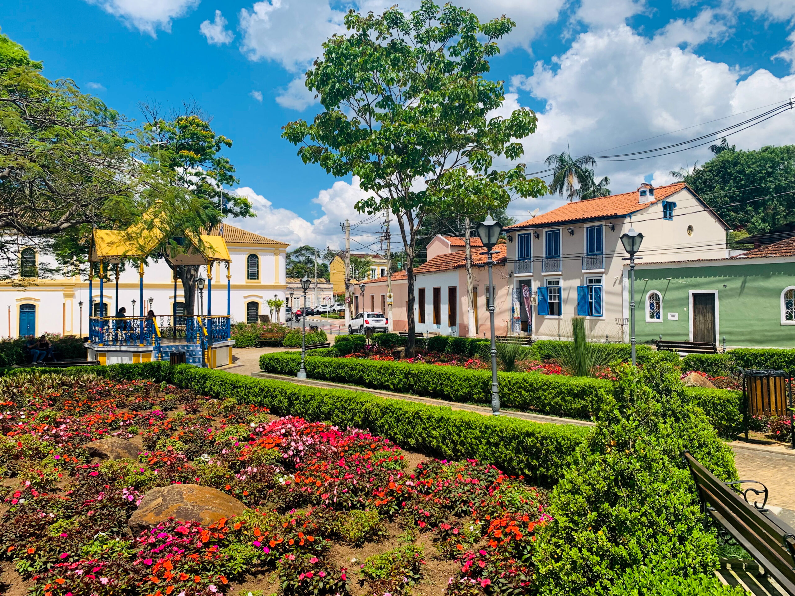
O Centro Histórico representa uma importante herança cultural e arquitetônica da cidade, preservando construções coloniais, igrejas, ruas de pedra e elementos fundamentais da memória local.
A preservação desse patrimônio depende também das condições ambientais, especialmente da qualidade do ar, da umidade e da ação de poluentes atmosféricos.
A presença de gases e partículas pode acelerar a deterioração de estruturas históricas e afetar a saúde da população.
Alterações climáticas influenciam diretamente o desgaste de materiais antigos e a conservação urbana.
O acompanhamento dos dados permite ações preventivas e melhores estratégias de preservação ambiental.
A Mini Estação Meteorológica foi construída com Arduino e sensores ambientais capazes de monitorar temperatura e umidade em tempo real.
O desenvolvimento foi realizado com apoio do Professor Rafael, que orientou a montagem, testes e funcionamento da estrutura tecnológica.
Essa integração entre História e Tecnologia tornou o projeto mais completo e aplicável à realidade local.
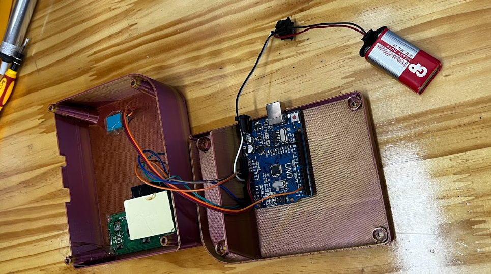
Comparação entre dados antigos e atuais com foco na preservação do patrimônio histórico e análise da qualidade ambiental. Os dados foram obtidos a partir da Mini Estação Metereológica, do Instituto Nacional de Meteorologia (INMET) e complementados com relatórios da CETESB, responsáveis pelo monitoramento climático e da qualidade do ar no estado de São Paulo.
Início de queda na umidade e aumento leve de poluentes.
Período crítico de seca e alta concentração de poluentes.
Alta umidade e melhora significativa da qualidade do ar.
Condições estáveis com boa dispersão de poluentes.
Retorno de condições secas e piora da qualidade do ar.
Baixa umidade e presença elevada de poluentes.
Melhora das condições ambientais e recuperação do ar.
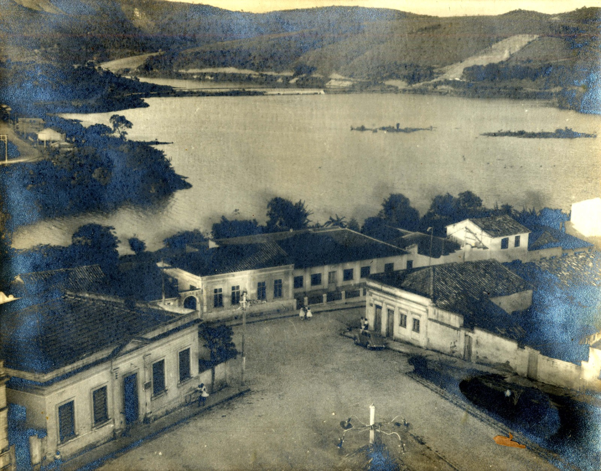
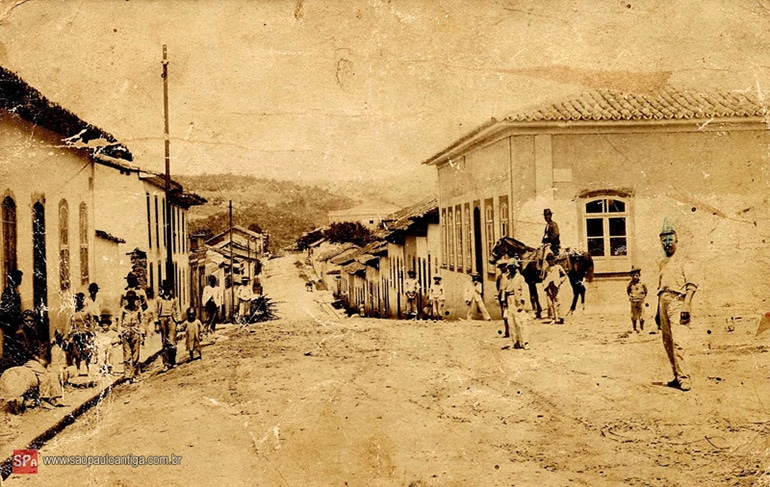
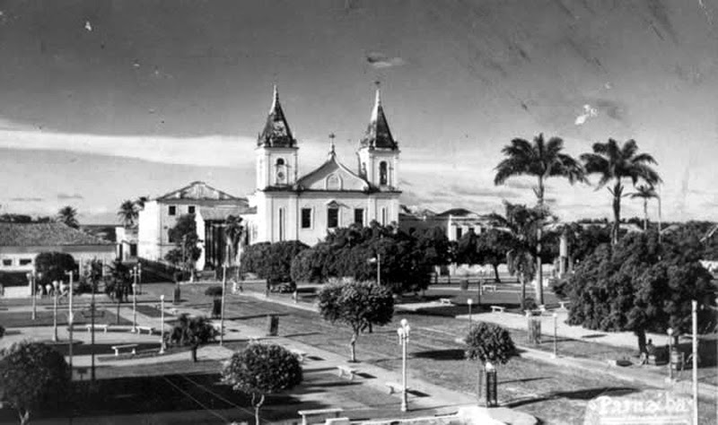
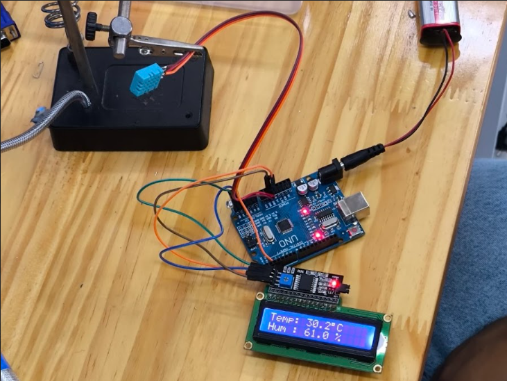
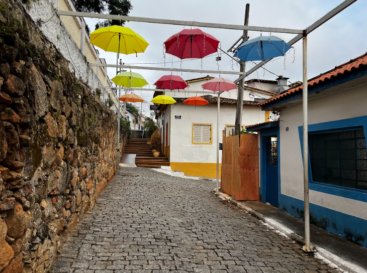
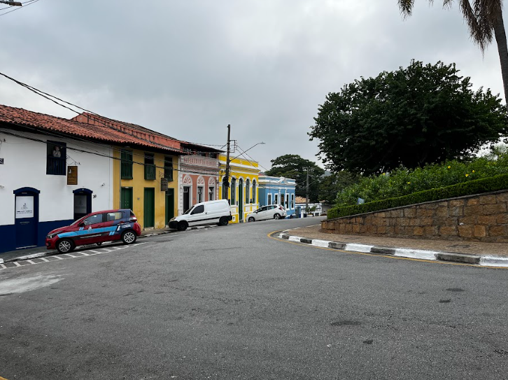
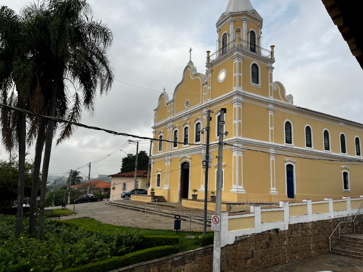
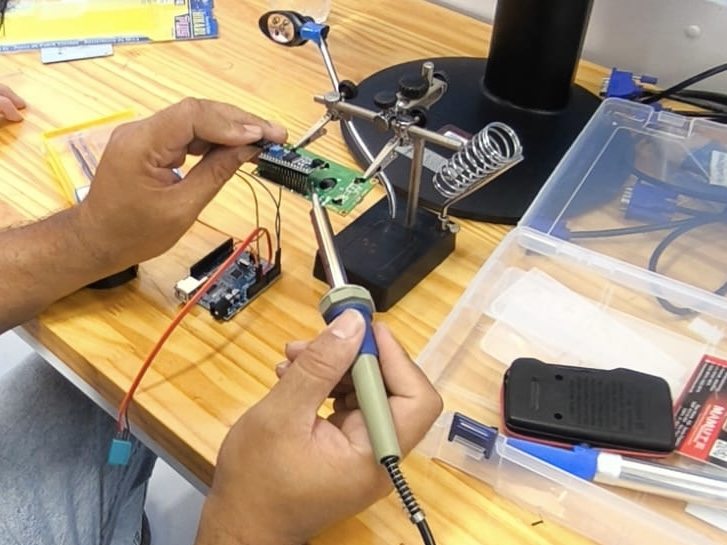